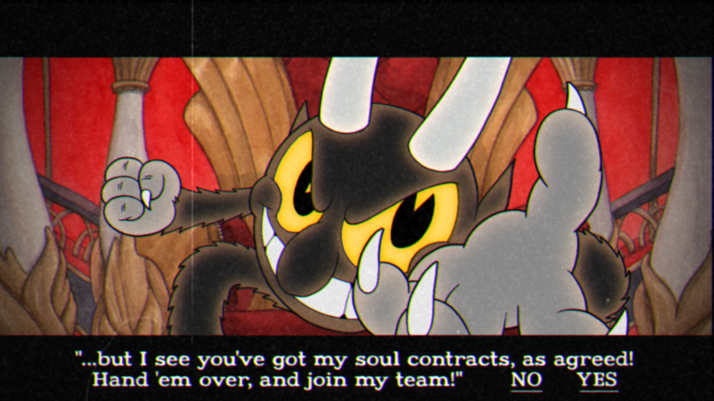
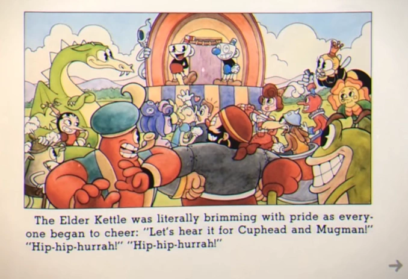

Chegamos na última ilha. Ela hsopeda os dois chefões principais da história e que tem um nível de
complexidade ainda mais alto do que já seria comum do game. É a menor ilha do jogo, tendo o Cassino para
o boss Rei Dado e o reino do Inferno para o Diabo

antes da luta contra o Diabo, o último boss do jogo, fazemos uma escolha de se realmente iremos enfrentá-lo e ter o final verdadeiro do jogo ou não enfrentaremos, ganhando um final alternativo (falo mais disso em História)

Após derrotarmos o Diabo, temos o final definitivo e que se encerra do mesmo jeito que começou, mostrando a história no livro. Quando os créditos do jogo passam, aparecemos na Inkwell Hell de novo e desbloqueamos o modo de dificuldade Expert
